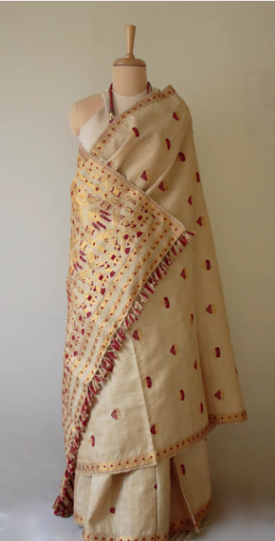

An eminent geographical indication, Muga silk sarees find their home in the state of Assam.
Muga silk is the product of the silkworm Antheraea assamensis endemic to Assam. The larvae of these moths feed on som (Machilus bombycina) and sualu (Litsaea polyantha) leaves. The silk produced is known for its glossy, fine texture and durability.
Muga silk sarees are made from the cocoons of the Antheraea assamensis silkworm, which is native to Assam, India. The silkworms are kept outdoors in temperatures ranging from 25°C to 27°C and humidity ranging from 75% to 85%. They eat the leaves of the som, sualu, mejankari, and pan-chapa trees, and the silk color can change depending on the season, from rich golden yellow to light brown
